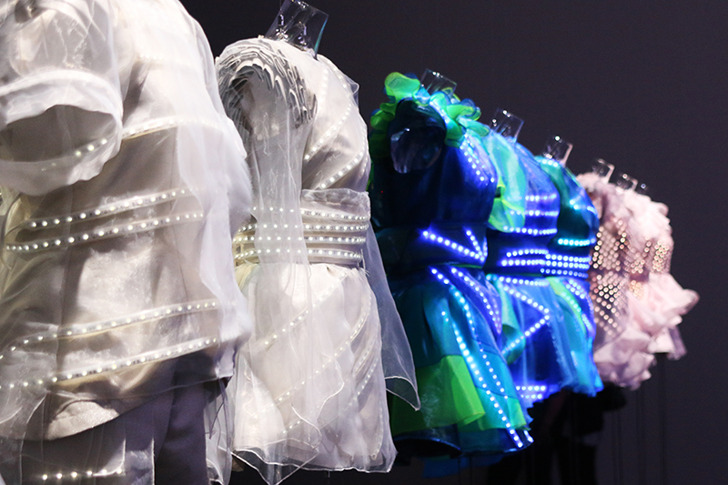

講演会
日程：5月18日（日）
場所：工学部2号館221教室
10:30~12:00
石橋素
経済産業省資源エネルギー庁省エネルギー・新エネルギー部新エネルギー対策課課長補佐

再生可能エネルギーの未来
エネルギー資源の少ない日本は、太陽光や風力などの再生可能エネルギーの利用拡大が急務です。本講演では、政府が現在、再生可能エネルギーの最大限の導入のために取り組んでいる最先端のプロジェクト－例えば、福島県沖の海上に浮かぶ世界最大級の風力発電所の建設－などについてお話します。また、産学官の連携により、今後どのような課題解決が求められているかについても議論したいと思います。
13:00~14:30
島津裕紀
経済産業省資源エネルギー庁省エネルギー・新エネルギー部新エネルギー対策課課長補佐
「再生可能エネルギーの未来」
エネルギー資源の少ない日本は、太陽光や風力などの再生可能エネルギーの利用拡大が急務です。本講演では、政府が現在、再生可能エネルギーの最大限の導入のために取り組んでいる最先端のプロジェクト－例えば、福島県沖の海上に浮かぶ世界最大級の風力発電所の建設－などについてお話します。また、産学官の連携により、今後どのような課題解決が求められているかについても議論したいと思います。
15:00~16:30
島津裕紀
経済産業省資源エネルギー庁省エネルギー・新エネルギー部新エネルギー対策課課長補佐
再生可能エネルギーの未来
エネルギー資源の少ない日本は、太陽光や風力などの再生可能エネルギーの利用拡大が急務です。本講演では、政府が現在、再生可能エネルギーの最大限の導入のために取り組んでいる最先端のプロジェクト－例えば、福島県沖の海上に浮かぶ世界最大級の風力発電所の建設－などについてお話します。また、産学官の連携により、今後どのような課題解決が求められているかについても議論したいと思います。